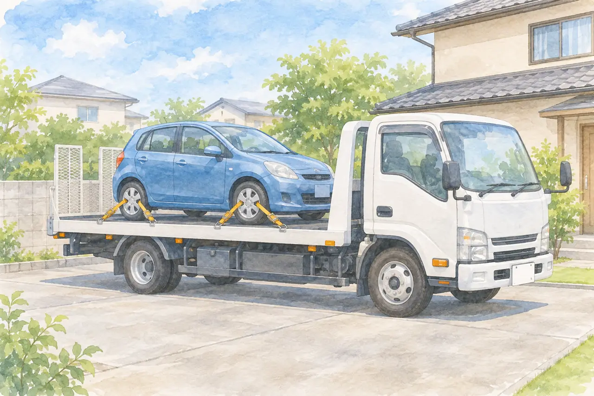

荒川区にお住まいの方へ
荒川区で車を手放すなら
住宅街の細い道でも引き取れる？廃車・引き取りの相談先
公開
こんにちは、東京都足立区江北で自動車解体・廃車買取をしている「大崎商店 環七店」です。
「荒川区に住んでいるけど、足立区のお店に頼めるのかな」
「家の前の道が細くて、車の引き取りに来てもらえるか心配」
そんなとき、荒川区のお客様も、大崎商店にご相談いただけます。
この記事の要点
- 荒川区への引き取りも行っています。 西尾久・東尾久・東日暮里へ、引き取りに伺った実績があります。荒川区は、環七店または入谷店から、車で片道約30分圏内が目安です。
- 細い路地は、「車が動かせるか」で変わります。 敷地から積載車まで動かせる車なら、積載車が路地に入れなくても、積み込める場合があります。まったく動かない車は、車の近くに積載車を止められるかが、ポイントです。
- 引き取れるかと費用は、事前にご案内します。 電話では、置いてある場所・道の広さ・車が動かせるかをお伝えください。
① 荒川区から、足立区のお店に頼める？
荒川区の車を、足立区のお店に頼むことは、できる場合があります。荒川区は、足立区の隣です。
荒川区に車の使用の本拠（普段使う拠点）がある場合、普通車は足立自動車検査登録事務所、軽自動車は軽自動車検査協会の足立支所が管轄です。実際の手続き先は、申請内容によって異なることもあります。くわしくは、足立ナンバーの廃車はどこで？の記事をご覧ください。
② 細い道・住宅街で、先に確認すること
「家の前の道が細いから、引き取りは難しいかも」と心配なときも、まずは依頼先に相談しましょう。
積載車が路地に入れなくても、車を動かせるか、近くに積み込み場所があるかで対応が変わります。使う車両や道具も業者によって異なるため、道幅・曲がり角・車の状態を、分かる範囲で伝えることが大切です。
車検が切れている車は、原則として公道を走れません。ご自身で道路へ運転して移動させず、敷地内で動かせるかを伝えましょう。動くか分からない場合も、無理に試す必要はありません。
動かない車や、車検が切れている車の運び方は、動かない車を運ぶには？の記事で、くわしく紹介しています。
③ 電話で伝えることを確認しましょう
伝える内容が多いほど、「行ってみたら、引き取れなかった」を減らせます。
- 置いてある場所：町名と、駐車場か、道路沿いか、路地の奥か
- 道の広さ：車が1台通れる幅か、すれ違えるか、曲がり角は多いか
- 車の種類と状態：軽自動車か普通車か。敷地内でエンジンをかけて動かせるか、押せば動くか、まったく動かないか。分からなければ、そのまま伝える
- 車検の期限・車検証の有無・所有者の名義
④ 大崎商店の場合：荒川区の引き取り

大崎商店では、荒川区への引き取りも行っています。 西尾久・東尾久・東日暮里へ、引き取りに伺った実績があります。荒川区は、足立区の隣で、環七店または入谷店から車で片道約30分圏内です。
町屋・西尾久などの住宅街は、路地が細く、積載車が入れない場所もあります。 敷地から積載車まで動かせる車なら、積載車が路地に入れなくても、積み込める場合があります。まったく動かない車は、近くに積載車を止めて積み込む場所が必要です。道が細く、そのスペースを確保できない場合は、引き取れません。
まず、環七店（03-3854-4141）へお電話ください。置いてある場所（町名）、道の広さ、車の種類と状態（動かせるか）、車検の期限を伺い、引き取りの可否や費用をご案内します。
大崎商店では、
- 解体費用・手続き代行費用・印紙代は、別請求しません
- 足立区外も、買取価格がつかない車は、環七店または入谷店から車で片道約30分圏内は引き取り無料（目安です。道幅や積み込み場所も事前に確認します）
- 買取価格がつく車は、圏外でも、所在地と車の状態によっては無料で引き取り（事前にご案内します）
- 車によっては、引き取り当日その場で現金買取もできます
- 車のお持ち込みは、どこからでも歓迎（基本は環七店。日時は、事前にお電話でご相談ください）
片道約30分圏内が、無料の目安です。 それより遠い場所も、車の種類や状態、日程によっては、お引き受けできる場合があります。遠い場合は、人件費や高速代がかかるため、無料が難しいこともあります。場所を伺って、事前にご案内します。
動かない車は、ワイヤーで積載車の荷台に引き上げて積むこともできます。現場で積み込めないと分かった場合も、そのことで追加費用はいただきません。
解体作業は、解体業の許可を受けた入谷店で行います。引き取りの範囲は、出張引き取りの対応エリアの記事をご覧ください。
ご自分の車の場合が気になったら、お気軽にご相談ください。車の状態と置き場所を伺い、ご案内します。
電話で相談する03-3854-4141よくある質問
Q. 荒川区のどの地区まで来てもらえますか？
A. 西尾久・東尾久・東日暮里へ、引き取りに伺った実績があります。ほかの地区も、置いてある場所と道の広さを伺って、引き取れるかをご案内します。まず、お電話でご相談ください。
Q. 路地が細い場所でも、来てもらえますか？
A. 車を動かせるかと、積載車を止めて積み込む場所があるかによって変わります。まず、敷地内で動かせるかと道の広さをお伝えください。積み込めずお断りする場合も、そのことで追加費用はいただきません。
Q. 車検が切れていて、動かせるか分かりません。
A. 無理に動かさず、分かる範囲の状態をお電話でお知らせください。車検が切れている車は、原則として公道を走れません。仮ナンバーを、お客様ご自身で用意していただく必要はありません。積載車での引き取りができるかを、場所と道の広さを伺って、ご案内します。
Q. 荒川区の車でも、足立区のお店で廃車にできますか？
A. ご相談いただけます。荒川区は、普通車・軽自動車とも足立の窓口の管轄です。車検証の情報と車の状態を確認し、引き取りの可否や必要書類をご案内します。
Q. 引き取りの費用は、かかりますか？
A. 買取価格がつかない車は、環七店または入谷店から車で片道約30分圏内なら、引き取り無料です（目安です）。買取価格がつく車は、圏外でも、所在地と車の状態によっては無料で引き取ります。事前にご案内します。
荒川区のご相談は、大崎商店へ
電話で相談する 03-3854-4141メールで相談する（フォーム）大崎商店 環七店
電話：03-3854-4141
〒123-0872
東京都足立区江北7丁目1−3
営業時間：月〜土 10:00〜18:00
休業日：日曜・祝日
環七沿い／舎人ライナー
西新井大師西駅
大崎商店 入谷店
電話：03-3899-2837
〒121-0836
東京都足立区入谷7丁目5−11
営業時間：月〜土 9:30〜17:30
休業日：日曜・祝日・第2土曜
荒川区のご相談は、環七店へ。 置いてある場所（町名）、道の広さ、車が動かせるか、車検の期限をお伝えください。
くわしい条件と出典（読みたい方向け）
- 引き取りの条件：積載車は1台で、複数の引き取りを同時には行っていません。すぐに伺えるかは、そのときの仕事の状況によります。到着の日時は、電話で事前にご案内します。
- 荒川区の車の窓口：普通車は足立自動車検査登録事務所、軽自動車は軽自動車検査協会の足立支所です。窓口や書類は、使用の本拠の位置や申請内容によって変わります。関東運輸局・足立自動車検査登録事務所の管轄／軽自動車検査協会・足立支所
- 車検切れの車：車検の期限が切れた車は、有効な臨時運行許可などの例外を除き、公道を走れません。仮ナンバー（臨時運行許可）は、廃車の目的で借りられるとは限りません。大崎商店の引き取りでは、お客様ご自身で仮ナンバーを用意していただく必要はありません。くわしくは、車検切れの車は公道を走れない。どうやって廃車にする？の記事をご覧ください。関東運輸局・臨時運行許可などの説明
- 車検証の所有者の確認：所有者がディーラーやローン会社の場合は、ご自身だけでは進められないことがあります。電話で、車検証の所有者と使用者を伺います。くわしくは、ローンが残っている車は廃車できる？の記事をご覧ください。
- 足立区の方へ：足立区で車を手放すときの相談先は、足立区で車を手放すならの記事をご覧ください。
※掲載画像はAIで生成したイラストです。実際の店舗・人物・車両とは異なります。